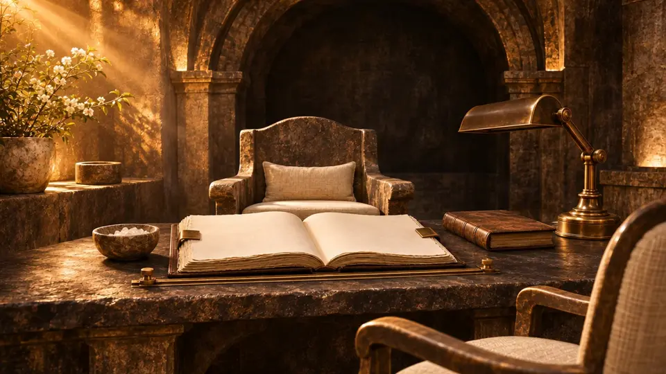
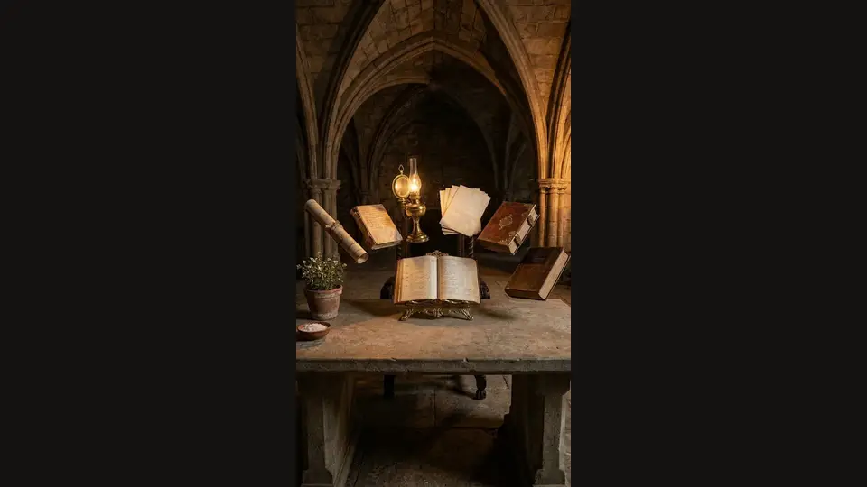

Inside the coin · The second world
The Keeper
You crossed through the coin. This is the Keeper's chamber — where a project's welcome is planned before anyone is greeted: approved answers, a set voice, and clear limits.
- $5 · scope confirmation required
- Proposed scope only — nothing deployed
- Checkout not connected
- Purchase disabled
Scroll — the Keeper is in
Services / proposed offer
A welcome with clear limits.
proposed · scope and availability confirmed before booking

Supplied imagery is illustrative, not evidence of a completed engagement or implemented product. The chamber film is the house's own film for this service, produced in-house and approved by the house's main builder.
The proposal
About this service
The Keeper — Extended Audience proposes a more considered way to welcome people who do not yet know a project. The work starts with approved information and the questions an audience is likely to bring. It then outlines tone, answer structure and safe escalation rather than presenting an unwired assistant as an active service. The supplied price does not establish a billing interval, usage allowance or promise of ongoing operation.
The points below describe proposed scope to be agreed, not completed work. Before booking, the brief must identify the source material, agreed outputs, exclusions and acceptance process. Supplied price ranges are scope-dependent; no schedule or ongoing support is implied.
Scroll — the Keeper is in
The Keeper · How a welcome is planned hereThe Chamber, WholeA stone desk, an open ledger, a chair kept for the guest. Scroll, and walk the six layers of the plan.
Layer 1 · What it isThe Audience MapWhat it does: names who the welcome is for — the people who arrive not yet knowing your project.
Layer 2 · What it isThe Approved AnswersWhat it does: organises answers from approved information only — nothing is invented at the door.
Layer 3 · What it isThe Voice and ToneWhat it does: sets how the Keeper speaks — the voice, the tone, and the words it will not use.
Layer 4 · What it isThe Unanswered QuestionsWhat it does: finds the questions nobody has answered yet — the blank pages — before a guest finds them first.
Layer 5 · What it isPrivacy and EscalationWhat it does: draws the boundaries — what stays private, and when a question is handed to a human.
Layer 6 · What it isThe Documented ExperienceWhat it does: writes the whole welcome down — the proposed experience, documented and ready to agree.
The KeeperEvery Layer, NamedThat is the whole plan: a welcome built from approved answers and clear limits, with a human at the end of it. Proposed scope — to be agreed before booking.
Agreed before booking
What’s inside
Proposed deliverables, not a record of completed work.
- Map the intended audience — proposed scope item
- Organise approved answers — proposed scope item
- Set the voice and tone — proposed scope item
- Identify unanswered questions — proposed scope item
Boundaries & prerequisites
Proposed scope only; no deployed assistant or live support service is represented here.
All paid work is taken by card, PayPal, or crypto — paying in PROVADIA earns 20% off, and holding PROVADIA is never required. The proposed ruling is 80% founder / 20% website & community, separate from gold fees. Any gold fees, source rights, operational work and acceptance terms require explicit agreement. No wallet connection or live backend is provided here.
The Keeper is one world. The coin is the gateway to all of them — every world in this town carries its way back.
Return to the Coin